MENU CLOSE
香川真季子
Makiko Kagawa

広島出身、宮崎在住。現在は4人の子どもを育てながら、デザインの仕事をしています。 4人の子どもたちとの慌ただしい毎日の中でも、ひとりでデザインに向き合う時間が、私にとって大切な時間になっています。 好きな音楽を聴きながらデザインを考え、PCに向かう時間が好きです。
「どう見せれば伝わるか」を考えてきた経験
これまで、営業や接客、ECサイト運営やコンサルティングなど、さまざまな仕事を経験してきました。 その中で大切にしてきたのが、相手の立場に立って考えること。「どう見せれば伝わるか」「お客様が知りたいことは何か」を考えることを大切にしてきました。

伝えることを、デザインに
「もっと商品の魅力を伝えられるようになりたい」という思いから、デザインを学び始めました。これまでの経験を活かし、見た目を整えるだけではなく、魅力がきちんと伝わるデザインを目指しています。気軽に相談してもらえる、身近で頼れるデザイナーでありたいと思っています。

ご依頼やご相談についてはこちらから、ご連絡ください。 まだ具体的な内容が決まっていなくても大丈夫です。 お気軽にご相談ください。
 ABOUT ME
ABOUT ME
CONTACT
ABOUT ME
ABOUT ME
CONTACT